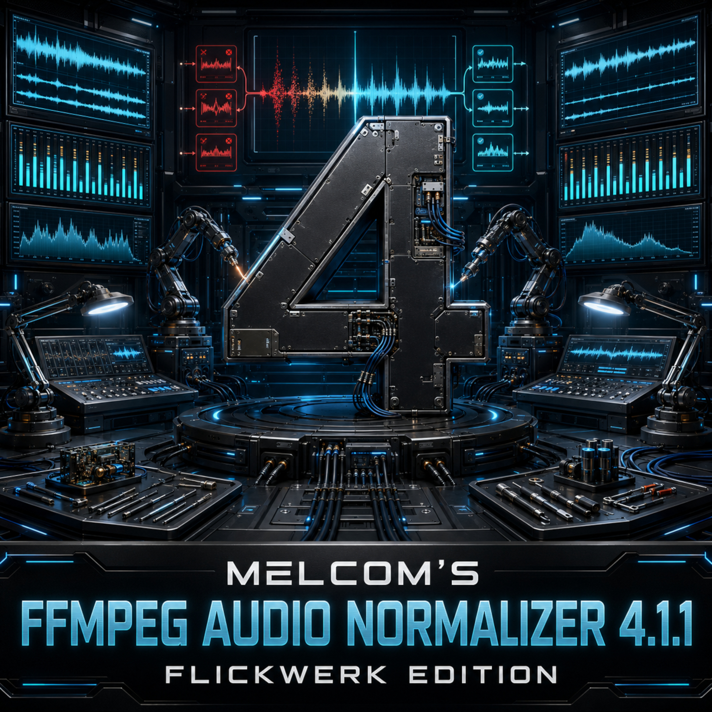
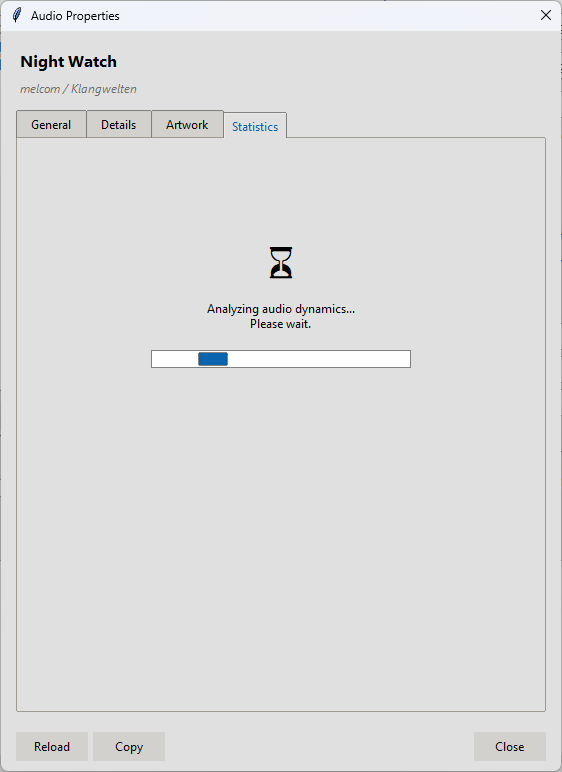
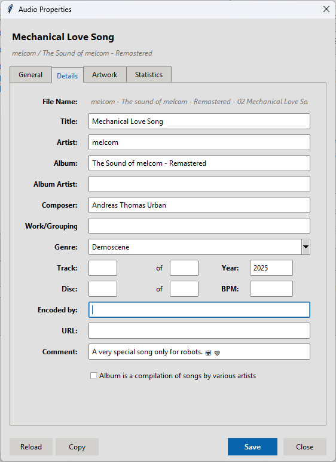
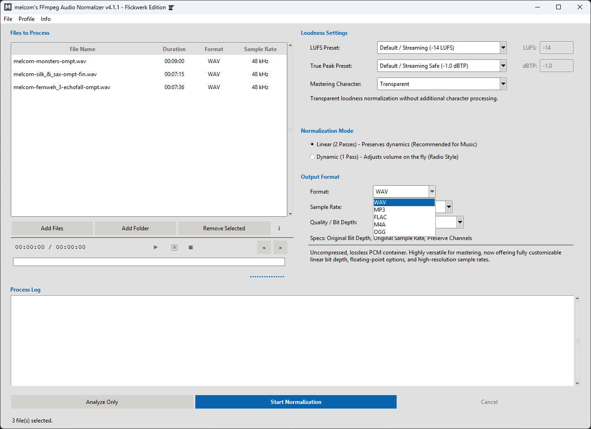

melcom's FFmpeg Audio Normalizer v4.1.1
Open-source audio normalization powered by FFmpeg, LUFS and True Peak processing. Built for music production, podcasts, gaming audio and large batch workflows - without requiring command-line knowledge.


Table of Contents
Requirements
To use melcom's FFmpeg Audio Normalizer, the complete FFmpeg suite is required:
ffmpeg.exe- Audio analysis, normalization, and metadata writingffplay.exe- Audio preview playback and player operationsffprobe.exe- Reading technical audio information and column detection
github.com/BtbN/FFmpeg-Builds/releases
Recommended package:
ffmpeg-master-latest-win64-gpl.zip
After extracting FFmpeg, configure the path to the FFmpeg folder inside the application's options menu.
Getting Started
- Launch
AudioNormalizer.exe. - Open:
File -> Options - Select the folder containing:
ffmpeg.exe,ffplay.exeandffprobe.exe - Use "Add Files", "Add Folder", or drag your files directly into the queue.
- Select your desired LUFS preset, True Peak limit and output format.
- Choose an audio character preset. Transparent is the default and applies no additional coloration.
- Click:
"Start Normalization"
Update Checks
The application can check GitHub Releases for a newer public version when it starts. This option can be enabled or disabled under File -> Options. Pre-release updates can be included with a separate option; they are excluded by default.
The automatic check stays silent when the installed version is current or GitHub cannot be reached. Use Info -> Check for Updates... to run a manual check and always receive a result.
Normalization Modes & Export Options
Linear (2 Passes)
Recommended for music production, mastering and archival work. The audio file is analyzed during the first pass and normalized with a fixed gain during the second pass. This preserves the original dynamics as accurately as possible.
Dynamic (1 Pass)
Recommended for speech, podcasts, streams and broadcast material. Loudness differences are actively balanced during processing.
Advanced Export Options & Real-Time Specs
The Flickwerk Edition offers total control over your output format:
- Sample Rate Selection: Adjust output sample rates from "Original / Default" up to
192000 Hz (192 kHz). - Quality & Bit Depth:
- WAV: Choose between 64-bit / 32-bit Floating Point, linear 32-bit / 24-bit / 16-bit integer, and 8-bit unsigned.
- FLAC: Select 24-bit or 16-bit lossless resolutions.
- MP3 & M4A (CBR/VBR): Choose constant bitrates (up to 320 kbps) or highly efficient variable profiles (e.g., V0, V2 for MP3).
- OGG: Supports variable quality levels (q4 to q10) and constant 320 kbps.
- Live Specs & Auto-Reset: A dynamic
Specs:indicator updates instantly with your settings. To prevent format conflicts, changing the container format automatically resets both settings back to "Original / Default".
Playback Controls & Queue
The built-in player and queue have been highly optimized for a seamless workflow:
- Windows Process Freeze (0% CPU): Clicking Pause puts the FFplay process completely to sleep (using
NtSuspendProcess), consuming exactly 0% CPU power while paused. - Click-Interactive Seek: Click anywhere on the progress bar to jump directly to that point in the track. The timeline updates smoothly starting from second 0 without any lag.
- Asynchronous Treeview Columns: Columns for *Duration*, *Format*, and *Sample Rate* scan in a background thread, keeping the main interface completely fluid.
- Column Selector & Windows Integration: Right-click the headers or context menu to show or hide columns. Right-clicking a file also allows you to quickly locate it in Explorer or open the native Windows properties dialog.
Audio Properties Inspector
The integrated Audio Properties Inspector allows you to view comprehensive details about your audio files, edit metadata (ID3 tags), manage cover artwork, and review detailed loudness statistics.
How to access the Inspector:
Select a file in the list and click the [ i ] button, or simply right-click the desired file.


Features by Tab:
- General Tab: Displays container, codec, sample rate, channels, duration, and nominal bitrate. To ensure technical accuracy, bit depths for lossy formats are correctly shown as
N/A. - Details Tab (Metadata): Edit Song Name, Artist, Album, Year, Genre, and more. Supported features adapt dynamically (WAV only supports standard RIFF INFO, raw AAC is read-only, and M4A offers complete tagging support).
- Artwork Tab: View embedded covers for MP3, FLAC, and M4A. Losslessly replace images, export them, or remove them entirely using a dedicated "X" button.
- Statistics Tab: Runs a high-precision EBU R128 analysis. View Integrated Loudness, True Peak, Sample Peak, average RMS power, DC Offset, measured bit depth, and Crest Factor.
- Smart-Copy: Formats and copies the content of the currently active tab directly into your clipboard with a single click.
Inside the Inspector:
Click on the images to enlarge them.





Presets & Audio Character
LUFS & True Peak Presets
- The application features clear, modern, and easily understandable preset profiles for all common streaming and broadcast guidelines.
- Default / Streaming Safe (-1.0 dBTP) is a strong default choice for most streaming platforms.
- Lossy Codec Safe (-2.0 dBTP) provides additional headroom for MP3, M4A and OGG exports.
- No Limit / Risky (0.0 dBTP) should only be used when the destination format explicitly allows it.
Mastering Character
Pure loudness normalization without additional sound shaping.
Adds gentle compression and subtle soft clipping for a tighter overall mix.
Delivers stronger impact, more energy and more noticeable dynamic processing.
The strongest processing mode for dense, sharp or aggressive electronic material.
Quality & Metadata
Audio Quality Preservation
When exporting to WAV or FLAC, original sample rates and bit depths are preserved automatically, unless a custom configuration has been manually selected.
Metadata & Tags
Artist, album, title, year and additional metadata are copied automatically to the normalized output file.
MP3 files automatically use the ID3v2.3 standard for maximum compatibility with Windows Explorer and hardware players.
Profile Management
The Flickwerk Edition features a flexible configuration profile system that allows you to save, load, and manage your preferred parameter settings. This is highly useful for rapidly switching between different workflows (e.g., podcast normalization vs. high-fidelity music mastering).
Available Actions:
- Save Profile...: Export all current settings to a JSON profile inside the
/profile/directory. You can specify a custom file name. - Load Profile...: Import a previously saved configuration from the
/profile/directory to instantly restore your workspace state. - Reset to Defaults: Instantly reset all configuration drop-downs, custom target values, and mastering options back to their safe default parameters.
The profile system saves the complete set of Loudness settings (target LUFS, True Peak, Mastering Character), the chosen Normalization Mode, and the Output Format details (including target Sample Rate and Quality/Bit Depth selections).
Additional Notes
readline() instead of reading byte-by-byte. This significantly cuts CPU overhead and entirely prevents GUI stutter during active processing..temp) are automatically removed.About This Help File
This project was created by melcom and released under the MIT License.
Project website:
melcom-creations.github.io/melcom-music